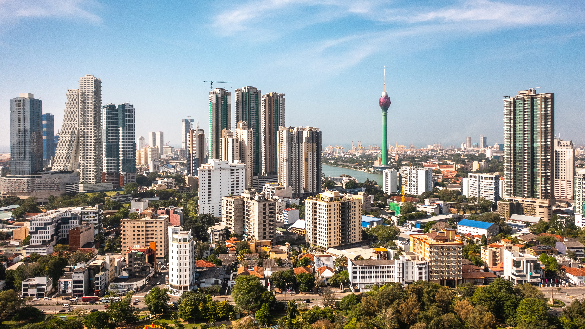
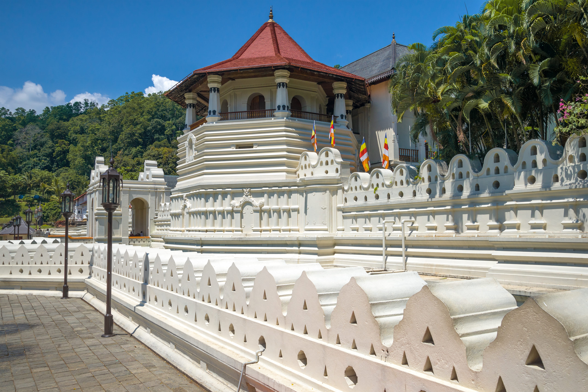
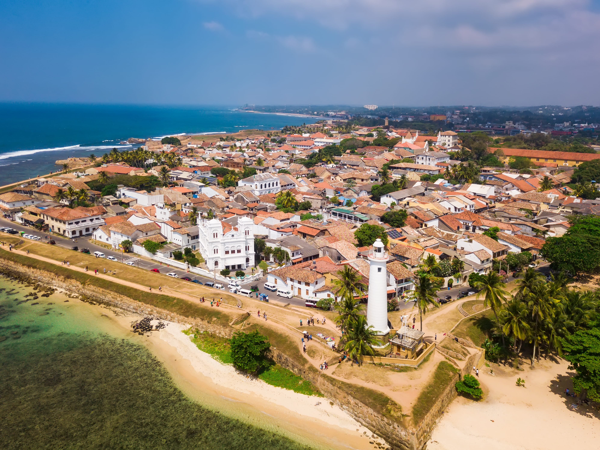
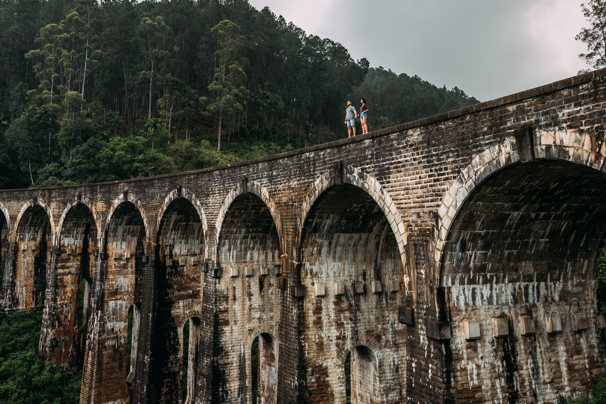
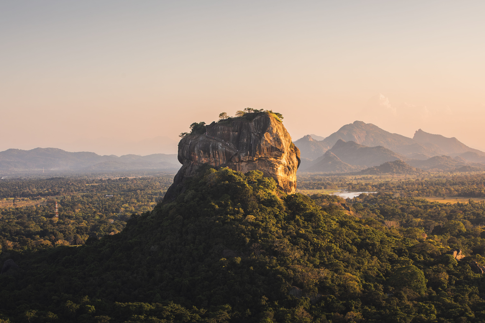
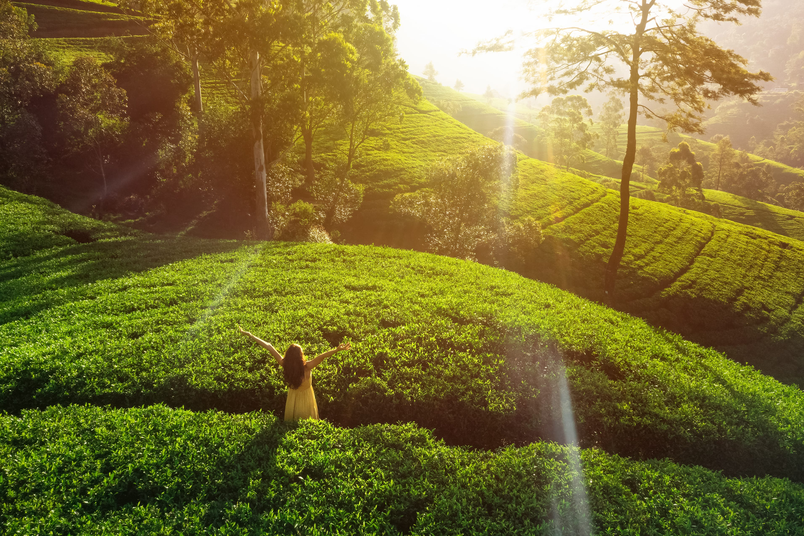
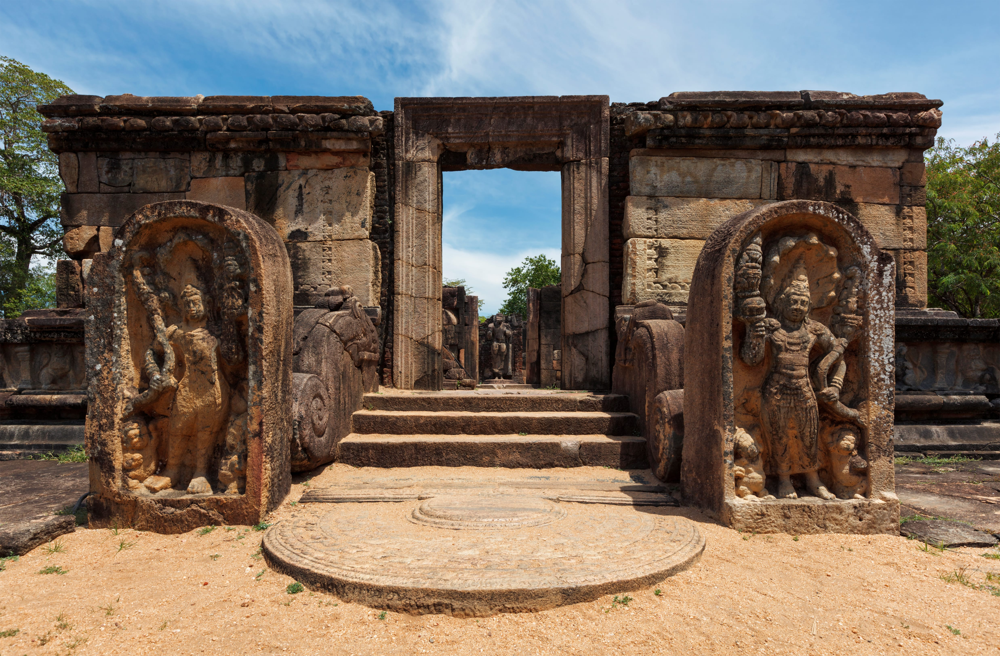
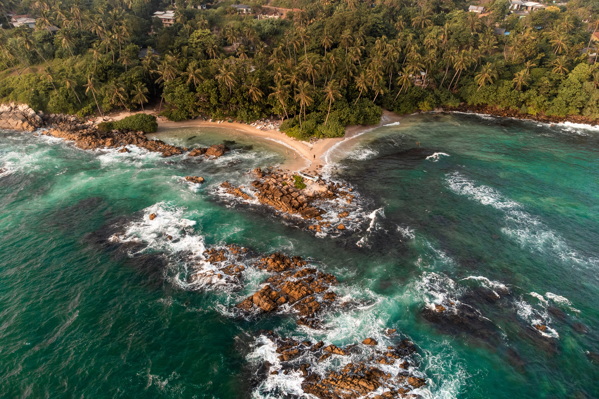

Colombo
Sri Lanka's vibrant capital fuses Dutch colonial heritage with modern skyscrapers and a buzzing street food scene. Visit the Gangaramaya Temple, explore the Pettah market, and stroll the breezy Galle Face Green.
Discover Sri Lanka's most iconic beaches, ancient heritage sites, mountain landscapes, and vibrant cities.
Use the filter buttons below to browse destinations by category.
Showing 8 destinations

Sri Lanka's vibrant capital fuses Dutch colonial heritage with modern skyscrapers and a buzzing street food scene. Visit the Gangaramaya Temple, explore the Pettah market, and stroll the breezy Galle Face Green.

The last royal capital of Sri Lanka, Kandy is home to the sacred Temple of the Tooth Relic, the spectacular Esala Perahera procession, the Royal Botanical Gardens, and breathtaking hill-country scenery.

A UNESCO World Heritage Site, Galle Fort is one of the finest colonial sea fortresses in Asia. Wander cobblestone streets, discover boutique galleries, and watch the sun set from the ancient ramparts.

A highland paradise of emerald tea gardens and dramatic mountain scenery. Hike to Little Adam's Peak and Ella Rock, photograph the iconic Nine Arch Bridge, and arrive via one of the world's most scenic train journeys.

Sri Lanka's most dramatic landmark – a 200-metre-high rock fortress built in the 5th century CE. Climb through water gardens, past ancient frescoes, and through the legendary Lion's Paw gateway to panoramic views.

Called 'Little England' for its cool climate and colonial charm, Nuwara Eliya sits at 1,868 metres amidst the world's finest tea estates. Tour tea factories, walk Victoria Park, and visit World's End at Horton Plains.

One of the ancient capitals of Sri Lanka and a UNESCO World Heritage Site. Home to the sacred Sri Maha Bodhi tree, enormous dagobas, and an unbroken Buddhist pilgrimage tradition stretching back over 2,500 years.

Sri Lanka's most beloved beach destination offers golden sands, world-class whale and dolphin watching, snorkelling, surfing, and the most spectacular sunsets on the southern coast. Pure, unfiltered paradise.
Use our interactive trip planner to build a personalised itinerary for your chosen destinations.
Build My Itinerary